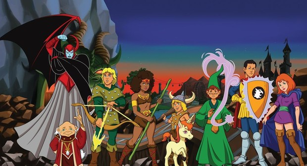
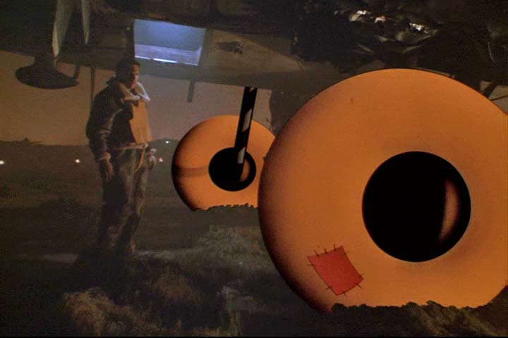
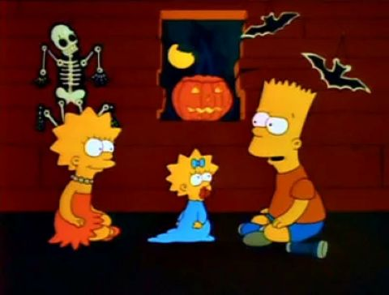
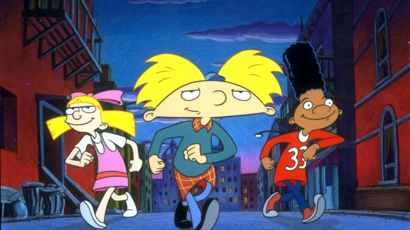
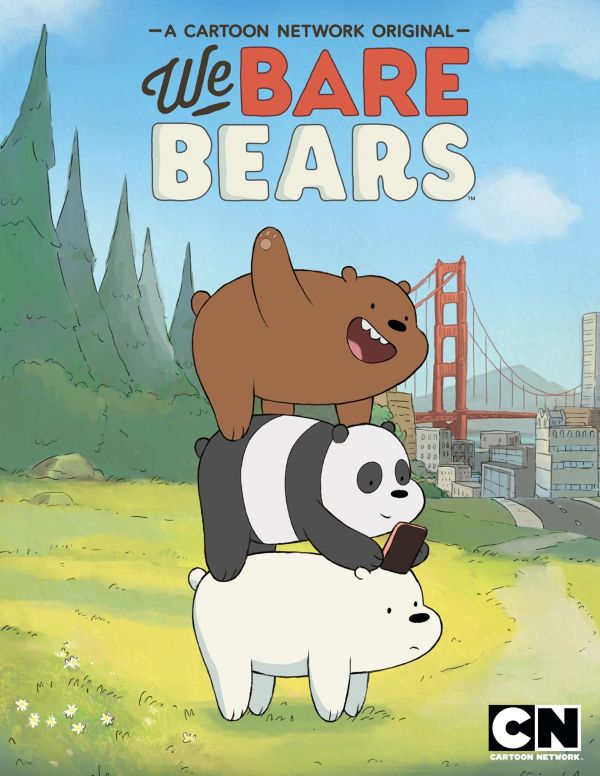
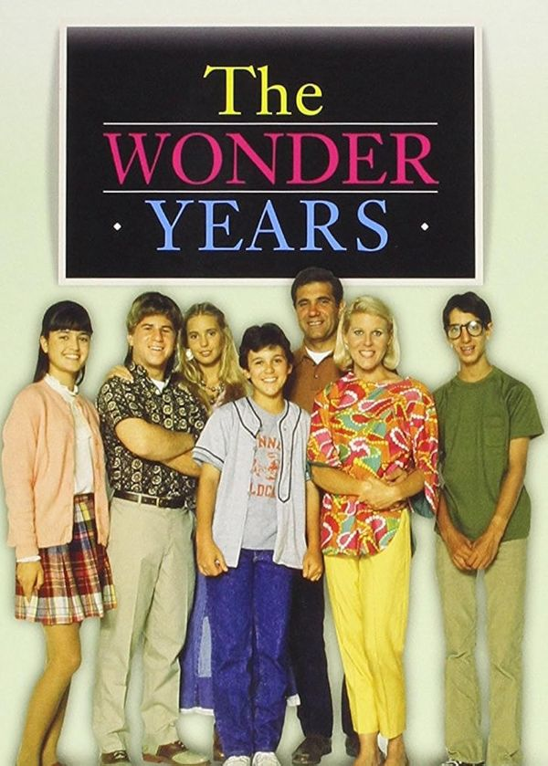
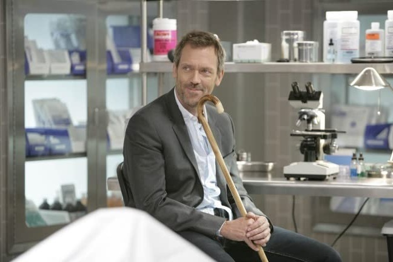
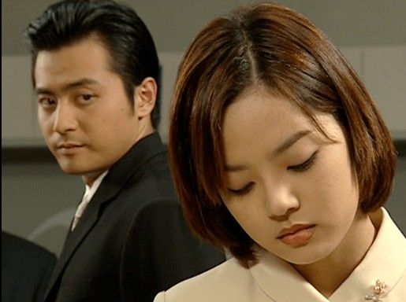
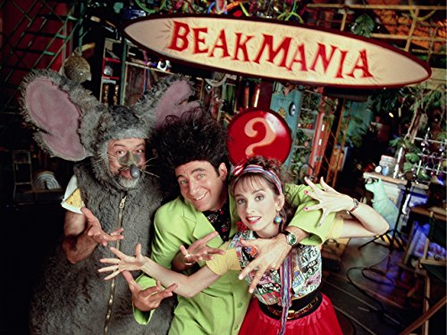

Series favoritas
30 de Septiembre, 2025
He visto menos series que películas, pero también tengo mis favoritas. Y empezaré por la de Dinosaurios ya que la mencionaste en tu ultimo correo.
Dinosaurios
Esa serie es la unica de la que supe que
Mamita y Pá no nos dejaron ver cuando se estrenó, porque estaban preocupados de que no fuera algo
para niños. Ellos vieron el primer episodio sólos arriba en el taller de Pá. Y ya
cuando estuvieron seguros de que estaba bien para nosotros, nos dejaron verla al día
siguiente. Ahora que la he vuelto a ver de adulto, me doy cuenta de lo buena que era
para introducir crítica social y valores, dentro de todo su ambiente cómico y absurdo.
Y por cierto, ahora que lo mencionaste en tu correo, no me había puesto a pensarlo desde esa
perspectiva, pero tienes razón, los lenguajes de programación parecen estar diseñados
de forma tan arbitraria como Earl clasificaba el conocimiento, jejeje. Aqui te dejo el fragmento
, es del capítulo 2 de la temporada 2. De verdad que no paro de reir con esa serie. Es genial.
Heidi
 Una de las series mas viejitas que recuerdo es Heidi, cuando era niño no la vi completa, sólo
uno que otro capítulo y no me llamaba mucho la atención. Pero ahora de adulto, la he visto
completa y me ha gustado tanto que es una de mis favoritas. Sus personajes, sus paisajes y su
trama están excelentemente desarrollados. Cuando la estoy viendo, por momentos
su estética me hace sentir como en un juego del Profesor Layton, jejeje.
Una de las series mas viejitas que recuerdo es Heidi, cuando era niño no la vi completa, sólo
uno que otro capítulo y no me llamaba mucho la atención. Pero ahora de adulto, la he visto
completa y me ha gustado tanto que es una de mis favoritas. Sus personajes, sus paisajes y su
trama están excelentemente desarrollados. Cuando la estoy viendo, por momentos
su estética me hace sentir como en un juego del Profesor Layton, jejeje.
Calabozos y Dragones

Otra serie que, aunque no la considero en su totalidad como mi favorita, es la de Calabozos y Dragones. Los capítulos que tengo más grabados en mi mente, eran los cinco que venían en el VHS que teníamos. Ahora que la tengo completa son los únicos que vuelvo a ver una y otra vez, jejeje. Pero mi favorito de todos, es el de "La búsqueda del esqueleto guerrero". Me gusta tanto ese capítulo que hasta uno de mis correos tiene una referencia a él, es mi correo alternativo que uso para registrarme en sitios web, y en lugar de ponerle mi nombre real, le puse Dekión. Me habría gustado ver el espisodio final de la serie, pero nunca lo hicieron, sólamente existe su guion oficial y un comic hecho por fans, pero ya vi un resumen y está genial ese ultimo capítulo.Historias Asombrosas

Me encantan las series de misterio que tienen episodios autoconclusivos, como la de "Dimensión desconocida", o la de "Galería nocturna". Pero mi favorita de todas las de ese tipo es "Historias Asombrosas", sé que las otras dos son de como que más de misterio y horror. Pero aunque "Historias Asombrosas" es más de fantasía, tiene un poco de todo, y sus episodios son muy variados. Hay tres capítulos que recuerdoo bastante bien. Aunque desconozco el número de capítulo y la temporada. El primero era el del artillero debajo de un bombardero de guerra, que dibujó unas llantas de caricatura, que finalmente se materializaron, salvándolo de morir aplastado cuando el avión aterrizó. El segundo es de un conserje de una universidad que por alguna extraña razón, empieza a absorber el conocimiento de los libros de la biblioteca. (Por cierto este capítulo se parece mucho a una película de John Travolta que se llama "Phenomenon".) Y por ultimo un capítulo de un preso condenado a la silla eléctrica, que mientras intenta escapar es alcanzdo por un rayo, que lo deja con poderes, e incluso sobrevive después de ser ejecutado en la silla.
Los Verdaderos Cazafantasmas
No puedo dejar de mencionar la serie de "Los Verdaderos Cazafantasmas", esa sí es mi favorita de
todas las que he visto de caricaturas. Me encanta su humor, sus personajes y sobre todo sus historias.
Estaban tan bien elaboradas que hay capítulos tan buenos que pudieron haber sido una película. Mis preferidos
son el de "Toc Toc" (es el de la puerta del fin del mundo que encontraron en el metro), el de
"El espanta niños", el de la "Banshee" y el de "La historia sin final" que es cuando conocen al
fantasma de Agatha Grisley, jejeje.
Los Simpsons

Como ya sabes, solo me gustan las primeras temporadas. Sería difícil definir exactemente cuáles, pero considero que de la 7 en adelante hubo cada vez menos capítulos que me gustaran de las temporadas posteriores. Alguna vez te mencioné que si tuviera que elegir un personaje favorito, estaría entre el Sr. Burns y el director Skinner. De esa serie disfruto mucho los primeros especiales de noche de brujas, pero casi ningun capítulo de las primeras temporadas tiene desperdicio. Todos son excelentes.Hey Arnold

Hey Arnold es una de esa series que por alguna extraña razon me hacen sentir mucha tranquilidad, me siento muy agusto viéndola. No sé si es por su estética, sus personajes o sus música de jazz jejeje. Pero es una serie que me gusta mucho. Y aunque no la he visto completa, todos los capítulos que recuerdo son muy buenos. Recuerdo especialemte el de los relojes Wako, el de cuando Phoebe se roba un poema, el del libro de poemas de Helga, el de las tortugas de chocolate, y obviamente los mas escalofriantes, como el del tren embrujado y el Jack cuatro ojos.Escandalosos

Me encanta ver a esos tres osos que, a pesar de vivir en una cueva en el bosque, también llevan una vida moderna, tienen mucha personalidad y son muy divertidos. A veces pienso que tengo algo de la personalidad de cada uno de ellos, jejeje. Pero mi favorito es Polar, me encanta su actitud despreocupada y que está lleno de habilidades.Los años maravillosos

No sé por donde empezar a decribir esta serie. Si los cazafantasmas es mi favorira de caricatura, ésta es en definitiva mi favorita de live action de todos los tiempos. Tal vez sea porque la ví cuando era adolescente, pero me identifuqué casi con cada aspecto y cada detalle de la vida de Kevin Arnold. Desde su familia, sus amigos, su escuela, sus amores y desamores, sus sueños y sus miedos. Todo me parecía tan real y tan cercano a mi propia vida, que de verdad sufrí, gocé y aprendí con cada uno de sus capítulos. Y cuando terminó la serie, senti un vacío tan horrible como si ya hubiera terminado mi propia adolescencia, y me hace añorar esos años que ya no volverán. De verdad lloro cada vez que veo los ultimos minutos del capítulo final. No ha habido otra serie que me haya hecho sentir tanto como ésta.Dr House

Aunuqe es una serie bastante larga, ya la he visto tres veces completa. Me entretiene mucho ver como usa el método deductivo para resolver los casos médicos, a la vez que usa su gran inteligencia para manipular a todos a su alrededor. Es una serie muy divertida, y que algunas veces también me ha hecho reflexionar sobre varios temas.Todo sobre eva

La unica miniserie coreana que he visto. Y me encantó. No sé por qué, pero, ver el estilo de vida de los orientales (coreanos o japoneses) me parece tan fascinante, que me hace querer buscar la perfeccion, la limpieza y el orden en todo lo que hago. Me pasa también cuando veo películas como las del estudio Ghibli. Pero en fin, esa miniserie es muy simpática, tierna e incluso cursi por momentos, pero bastante entretenida. A mi Foza y a mí nos gustan los protagonistas.El mundo de Beakman

Era un programa medio extraño pero muy divertido e interesante. Recuerdo haber intentado hacer algunos de los experimentos, pero no me salieron muy bien, jejeje. Se me hace un poco raro que, ultimamente han estado saliendo pequeños videos en el canal de YouTube de Xbox con Beakman, me parece una colaboración bastante curiosa.Dejé fuera muchas series que aunque me gustan mucho, no terminaría de enlistarlas aquí. Sólo por no dejarlas olvidadas, mencionaré: Érase una vez los inventores, Don Gato y su pandilla, Los picapiedra, Patoaventuras, Dragon Ball y Dragon Ball Z, Garfield y sus amigos, Mr. Bean, Animaniacs, Las aventuras de Fly, Fenomenoide, Black mirror, Lie to me y Cosmos: un viaje personal. Espero no haberte aburrido con mi lista, procuré ser lo mas breve posible con la descripción de cada serie.
← Volver a Historias